From sorting through my past photos during the COVID-19 crisis, I've assessed and found some of my better quality photos of birds observed over the years. Next update coming 1 June 2020.
Most recent photo added 1 May 2020.
| Species | Location | Date | Photo Thumbnail |
|---|---|---|---|
|
Spotted Owlet
Athene brama |
Keoladeo Ghana NP, Bharatpur, India | 27 December 2019 | ⇒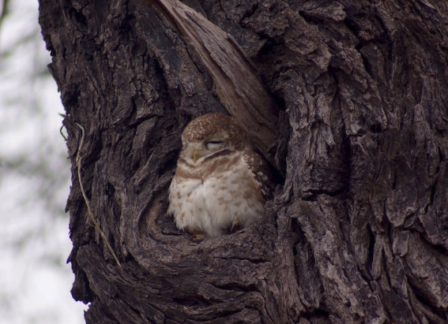 |
|
Bronze-winged Jacana
Metopidius indicus |
Keoladeo Ghana NP, Bharatpur, India | 27 December 2019 | ⇒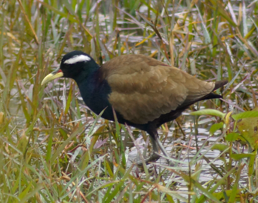 |
|
Painted Stork
Mycteria leucocephala |
Keoladeo Ghana NP, Bharatpur, India | 27 December 2019 | ⇒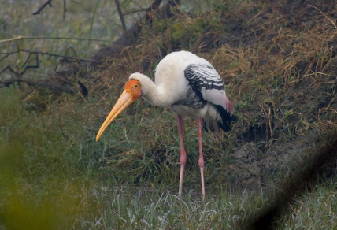 |
|
Eurasian Marsh-Harrier
Circus aeruginosus |
Keoladeo Ghana NP, Bharatpur, India | 27 December 2019 | ⇒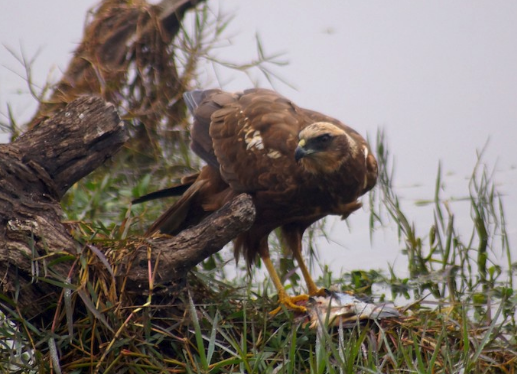 |
|
Grey-hooded Warbler
Phylloscopus xanthoschistos |
Corbett National Park, India | 22 December 2019 | ⇒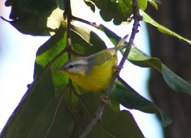 |
|
Grey-headed Canary-Flycatcher
Culicicapa ceylonensis |
Ramnagar, Uttarakhand, India | 22 December 2019 | ⇒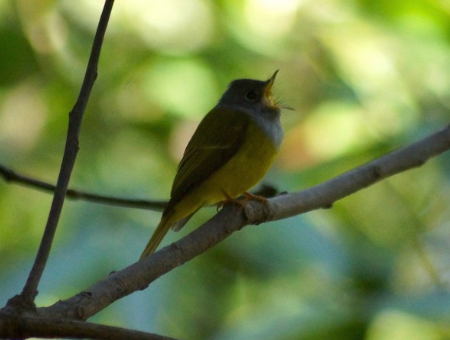 |
|
Crested Serpent-Eagle
Spilornis cheela |
Corbett National Park, India | 21 December 2019 | ⇒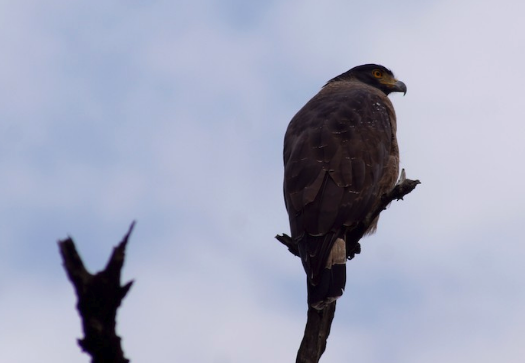 |
|
Himalayan Bulbul
Pycnonotus leucogenys |
Ramnagar, Uttarakhand, India | 21 December 2019 | ⇒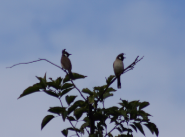 |
|
Golden-fronted Leafbird
Chloropsis aurifrons |
Ramnagar, Uttarakhand, India | 21 December 2019 | ⇒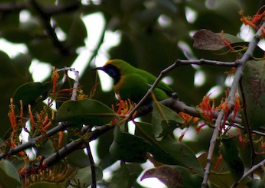 |
|
White-capped Redstart
Phoenicurus leucocephalus |
Ramnagar, Uttarakhand, India | 21 December 2019 | ⇒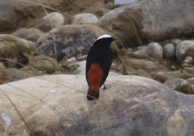 |
|
Western Bluebird
Sialia mexicana |
Glendale, CA, USA | 20 May 2017 | ⇒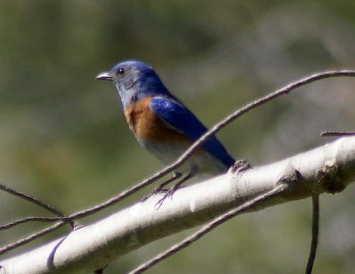 |
|
Cattle Egret
Bubulcus ibis |
Manhattan, NY, USA | 19 April 2017 | ⇒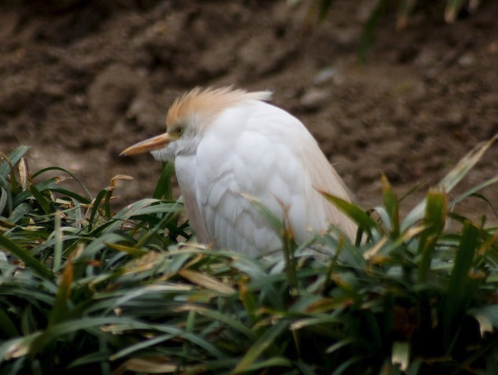 |
|
Ruby-crowned Kinglet
Regulus calendula |
Central Park, NYC, USA | 17 April 2017 | ⇒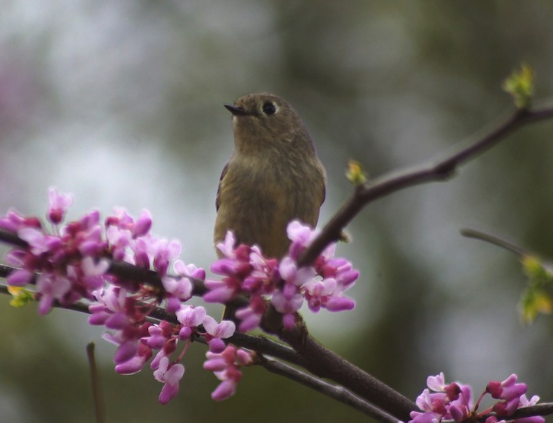 |
|
Eastern Towhee
Pipilo erythrophthalmus |
Central Park, NYC, USA | 17 April 2017 | ⇒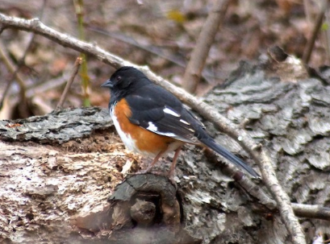 |
|
Downy Woodpecker
Dryobates pubescens |
San Dimas, CA, USA | 3 April 2017 | ⇒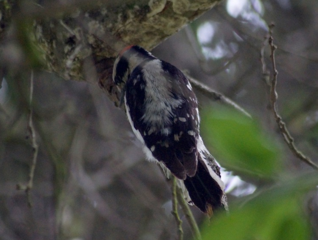 |
|
Glaucous-winged Gull
Larus glaucescens |
Malibu, CA, USA | 12 March 2017 | ⇒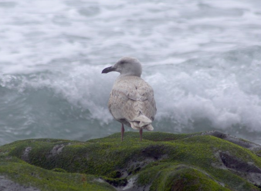 |
|
Brandt's Cormorant
Phalacrocorax penicillatus |
Playa del Rey, CA, USA | 12 February 2017 | ⇒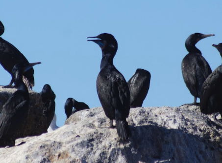 |
|
Spot-winged Pigeon
Patagioenas maculosa |
Mendoza, Argentina | 30 December 2016 | ⇒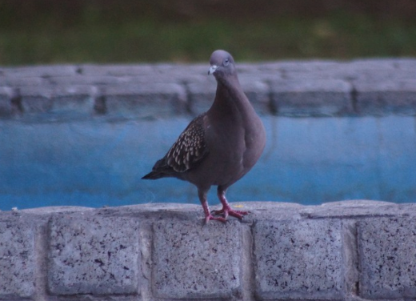 |
|
Dusky Tapaculo
Scytalopus fuscus |
Parque Nacional La Campana, Chile | 26 December 2016 | ⇒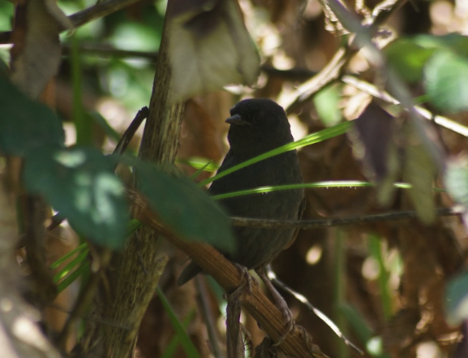 |
|
White-crowned Sparrow
Zonotrichia leucophrys |
Van Nuys, CA, USA | 7 August 2015 | ⇒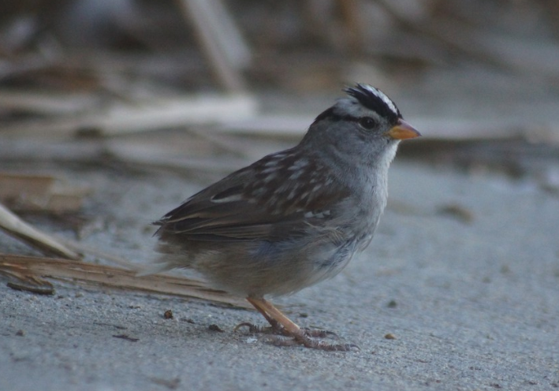 |
|
Mew Gull
Larus canus |
Playa del Rey, CA, USA | 31 January 2014 | ⇒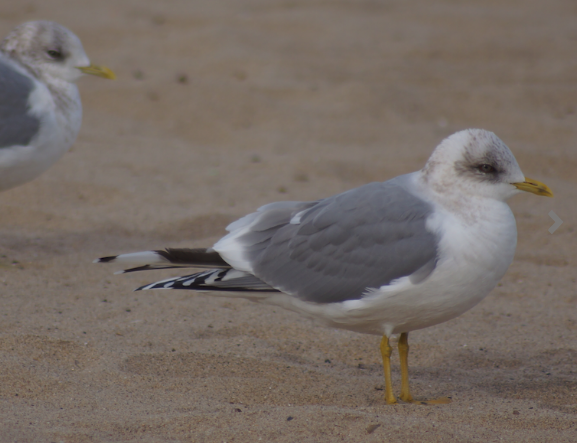 |